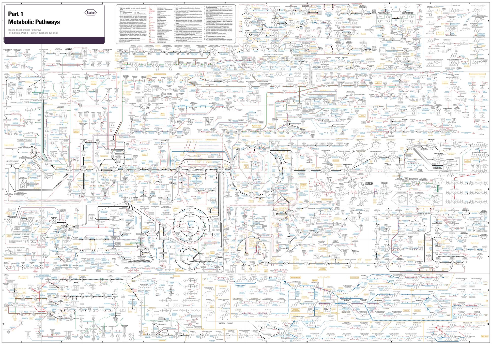
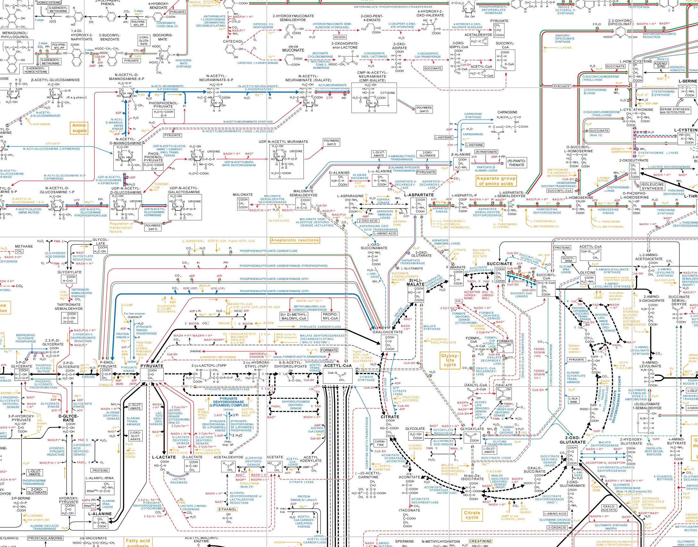

Biochemical Pathways Poster Archive
Printable renders of Roche's Biochemical Pathways, Part 1: Metabolic Pathways poster, assembled from the map tiles hosted on biochemical-pathways.com.


Full poster, downscaled from the October 21, 2016 JPEG. Click to open it at full size.


Detail of the center (citrate cycle and pyruvate metabolism), 2,178 × 1,708 px · captured October 21, 2016.
A fixture of the lab
Gerhard Michal first compiled the chart in 1965 at Boehringer Mannheim, now part of Roche, and kept refining it for decades. The company gave it away free, and more than 700,000 printed copies went out. Roche called it a familiar sight "in research institutes, classrooms, and laboratories from Argentina to New Zealand," and the preface to Michal's companion atlas describes the "Boehringer chart" as hanging in "almost every lab working in the field of biochemistry or molecular biology."
It put all of metabolism on one wall, so you could follow a molecule from glycolysis into the citrate cycle and on into amino acid metabolism. People kept asking for it: demand outran Roche's free print runs in 2018 and again in 2023, and the chart inspired the MetaCyc pathway databases. This repository has been forked more than two dozen times by people who wanted a copy of their own.
Roche has since stopped distributing the poster. This archive keeps it printable, so it can stay on lab walls a little longer.
Sources: Roche · Zenodo record · ChemistryViews · Biochemical Pathways, 2nd ed. (Wiley, 2012) · Royal Society of Chemistry · issue #2 (2018) · Roche on X (2023)
Downloads
Print-size PDF
The high-resolution render, sized to the original printed poster.
- Format
- PDF, 1 page
- Page
- 139 × 97.4 cm (54.7 × 38.4 in)
- Resolution
- 250 ppi, lossless
- File
- 20.5 MB
- Captured
High resolution
Best for large-format printing.
- Format
- PNG
- Size
- 13,659 × 9,574 px
- File
- 22.6 MB
- Source
- Zoom level 4
- Captured

Standard resolution
Smaller file, fine for screens and posters up to ~A1.
- Format
- JPEG
- Size
- 6,829 × 4,795 px
- File
- 13.0 MB
- Source
- Zoom level 3
- Captured
Print size
The printed Part 1 poster measured about 139 × 98 cm, a bit larger than A0. The Royal Society of Chemistry describes it as "larger than DIN A0 format: an enormous 1.4 x 1 m", and other descriptions give 139 × 98 cm. Some blogs quote 52 × 36 in (132 × 91 cm). The PDF is 139 cm wide. The render is slightly wider in proportion than 139 × 98, so the page comes out 97.4 cm tall without cropping or stretching.
For a smaller print, scale the PDF to fit. At A0 (118.9 × 84.1 cm) it still prints at about 290 ppi.
About
After Roche stopped printing the posters, it put them online as an interactive tile map. This project's script downloaded those tiles and stitched the layers (background, enzymes, coenzymes, substrates, regulatory effects, higher plants, unicellular organisms) into a single printable image, with the coordinate grid removed.
Roche also offered its own print-ready PDFs of both posters for a time. A snapshot of that download is archived on Zenodo (record 4446230).
The poster artwork belongs to Roche. This page only preserves the renders for personal and educational use.
The original download scripts are kept in legacy/ for reference. They no longer work.